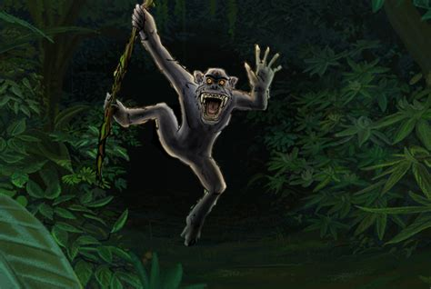

The advent of the phantom Tokoloshe came about through indigenous Southern African folklore to explain why people inexplicably died while sleeping in their rondavels at night. Traditionally, these people slept on the floor on grass mats encircling a wood fire that kept them warm during sub-freezing cold winter nights on the highveld in the rarefied air. They never realized the fire was depleting the oxygen levels, leaving noxious carbon monoxide, which is heavier than pure air and sinks to the bottom. Eventually it was realized that anyone who happened to be sleeping in an elevated position escaped the deadly curse of Tokoloshe, which was described as a short man about hip high who randomly stole one's life in the night unless they were lifted to the height of their bed. "Some Zulu people (and other southern African tribes) are still superstitious when it comes to things like the supposedly fictional tokoloshe—a hairy creature created by a witch doctor to harm his enemies (also … known to bite off sleeping people's toes)."
According to legend, the only way to keep the Tokoloshe away at night is to put a few bricks (2m high) beneath each leg of one's bed. However, this will not protect anything but the person whose bed it is along with the bed itself, as it may instead cause havoc not involving said people.
A jealous person will approach an evil witch doctor, shaman or Sangoma to take vengeance on someone they have some issue with. They would have to promise the soul of a loved one but cannot choose who, the Tokoloshe chooses the soul it decides to take. The witch doctor first needs to locate a dead body to be possessed. They must pierce its eye sockets and brain with a hot iron rod, so that it cannot think for itself and obeys only its master. They then sprinkle a special powder and shrink its body. It is then let loose to terrorise its target. Weeks, months maybe years later, the Tokoloshe will take its payment of the soul of the clients loved one.